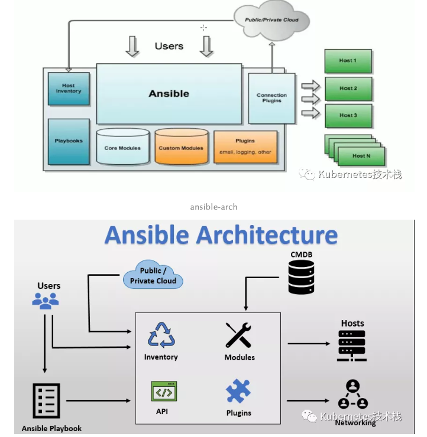

L11 任务中心之Ansible基础篇
1 ansible 简介：
Anasible 是基于Python2-Paramiko 模块开发的自动化维护工具，实现了批量系统配置、部署、运行等功能。Ansible是基于模块工作的，本身不具备批量部署的功能，如果想要实现批量自动化部署，是Ansible自身的各种模块的集合。
可以与 Ansible 同台竞技的运维工具（ pupet、cfengine、chef、func、fabric、saltstack ）
Ansible 发展史
- ansible 作者: Michael DeHaan 同时他也是 Cobbler 与 Func 作者。
- 2012-03-09 发布 0.0.1 版本。
- 2015-10-17 被 Red Hat 收购。
- GitHub
ansible 特性
- Python 开发
- 模块化: 调用特定的模块(如: Paramiko、PyYAML、jinja2 等), 完成特定的任务。
- 自定义模块
- 简单部署
- 支持编排任务（PlayBook）
- 冥等性: 任务重复执行等于只执行一次, 不会重复执行多次相同命令。
- 支持多语言编写模块
- YAML 格式编排任务,支持丰富的数据结构.
2、Ansible 架构与执行流程

ansible 主要组成部分:
Users:管理Ansible Playbook和Ansible引擎。Ansible playbook:Ansible引擎和CMDB做交互。Public or Private cloud: 便于所有模块 和API以及云的交互。Inventory:Ansible 执行主机的列表清单，默认读取配置为/etc/ansible/host。API: 提供端到端交互的API接口。ModulesAnsible 执行命令的功能模块, 一般为Ansible内置模块, 也可以自定义第三方模块。Plugins: 用于补充模块的功能，可以自行编写插件。
3、Ansible 安装
# Centos
yum -y install ansible
# Ubuntu
apt install -y ansible
# 源码安装
git clone https://github.com/ansible/ansible
# 使用 pip 命令安装
pip install ansible
4、Ansible 配置说明:
/etc/ansible/ansible.cfg主配置文件, 配置ansible的工作特性./etc/ansible/hosts主机列表清单./etc/ansible/roles/存放(roles)角色的目录./usr/local/bin/ansible二进制执行文件, ansible 主程序./usr/local/bin/ansilbe-doc配置文档, 模块功能查看工具./usr/local/bin/ansible-galaxy用于上传/下载 roles 模块到官方平台的工具./usr/local/bin/ansible-playbook自动化任务、编排剧本工具/usr/bin/ansible-pull远程执行命令的工具./usr/local/bin/ansible-vault文件(如:playbook文件) 加密工具./usr/local/bin/ansible-console基于 界面的用户交互执行工具.
4-1 /etc/ansible/hosts
创建SSH秘钥 ssh-keygen -t rsa -C "deniss.wang" 拷贝公钥到其他被服务器 ssh-copy-id -i ubuntu@ubuntu20-bj01
4-2 hosts
[codo-cluster]
demo.opendevops.cn ansible_ssh_user=root
www.opendevops.cn ansible_ssh_user=root
[k3s-cluster]
ubuntu20-bj01 ansible_user=ubuntu
ubuntu20-bj02 ansible_user=ubuntu
ubuntu20-bj03 ansible_user=ubuntu
ubuntu20-sh04 ansible_user=ubuntu
-m指定模块执行。如：ping、yum、copy、file等，此处使用模块ping测试。-k使用密码方式，默认是使用SSH-KEY登录。
基本示例：
# ansible 通过 单主机进行操作 ( -k 为用户密码方式, 默认为 ssh-key )
ansible 10.0.8.2 -m ping -k
# ansible 通过 ':' 组合进行操作
ansible "10.0.8.2:10.0.8.3" -m ping -k
# ansible 通过 通配符加主机 进行操作
ansible 10.0.8.* -m ping -k
# ansible 通过 hosts 组名称 进行操作
ansible codo -m ping -k
# ansible 通过 ':' 组合组进行操作
ansible 'codo-cluster:k3s-cluster' -m ping -k
# ansible 通过 通配符 进行操作
ansible '*-cluster' -m ping -k
# ansible 通过 ':&' 逻辑与 (两个组中都包含的主机)
ansible 'codo-cluster:&k3s-cluster' -m ping -k
# ansible 通过 ':!' 逻辑非 (codo-cluster 但不在 k3s-cluster的主机)
ansible 'codo-cluster:!k3s-cluster' -m ping -k
# ansible 也支持多逻辑的组合
ansible 'webservers:dbserver:&appserver:!ftpservers' -m ping -k
# ansible 也支持正则表达式
ansible '~(codo|k3s)-cluster' -m ping -k
# ansible 通过 all 对 hosts 清单下所有主机进行操作
ansible all -m ping -k
# ansible 通过 通配符 对 hosts 清单下所有主机进行操作
ansible '*' -m ping -k
执行结果：
# ansible k3s -m 'ping'
ubuntu20-bj03 | SUCCESS => {
"ansible_facts": {
"discovered_interpreter_python": "/usr/bin/python"
},
"changed": false,
"ping": "pong"
}
ubuntu20-bj02 | SUCCESS => {
"ansible_facts": {
"discovered_interpreter_python": "/usr/bin/python"
},
"changed": false,
"ping": "pong"
}
ubuntu20-bj01 | SUCCESS => {
"ansible_facts": {
"discovered_interpreter_python": "/usr/bin/python"
},
"changed": false,
"ping": "pong"
}
ubuntu20-sh04 | SUCCESS => {
"ansible_facts": {
"discovered_interpreter_python": "/usr/bin/python"
},
"changed": false,
"ping": "pong"
}
4-3 /etc/ansible/ansible.cfg
# defaults 为默认配置
[defaults]
# 主机清单的路径, 默认为如下
# inventory = /etc/ansible/hosts
# 模块存放的路径
# library = /usr/share/my_modules/
# utils 模块存放路径
# module_utils = /usr/share/my_module_utils/
# 远程主机脚本临时存放目录
# remote_tmp = ~/.ansible/tmp
# 管理节点脚本临时存放目录
# local_tmp = ~/.ansible/tmp
# 插件的配置文件路径
# plugin_filters_cfg = /etc/ansible/plugin_filters.yml
# 执行并发数
# forks = 5
# 异步任务查询间隔 单位秒
# poll_interval = 15
# sudo 指定用户
# sudo_user = root
# 运行 ansible 是否提示输入sudo密码
# ask_sudo_pass = True
# 运行 ansible 是否提示输入密码 同 -k
# ask_pass = True
# 远程传输模式
# transport = smart
# SSH 默认端口
# remote_port = 22
# 模块运行默认语言环境
# module_lang = C
# roles 存放路径
# roles_path = /etc/ansible/roles
# 不检查 /root/.ssh/known_hosts 文件 建议取消
# host_key_checking = False
# ansible 操作日志路径 建议打开
# log_path = /var/log/ansible.log
ansible执行过程
- load配置文件
/etc/ansible/ansible.cfg - Load 模块配置文件
- 通过 Ansible 将调用的模块或PlayBook生成对应的临时 py文件, 并将该临时文件传输至远程服务器的对的执行用户目录下
$HOME/.ansible/tmp/ansible-tmp-2123/xxxxxxx.py >文件. - 对生成的文件添加可执行权限.
- 执行生成文件，并返回对应的结果.
- 删除生成文件，退出.
- 执行返回状态：
- 绿色：执行成功，无更改操作。如 ping模块
- 黄色：执行成功，更新过主机的操作。如执行shell模块执行ifconfig命令。
- 红色：执行失败返回结果。如FAILED、UNREACHABLE状态。
- 执行返回状态：
4-4 Ansible-Doc
使用参数：
-l--list显示可用模块-s`` --snippet显示指定模块的playbook阶段
Demo
# Demo
ansible-doc -l
# ...略过
ansible-doc ping
# 模块ping显示文档
ansible-doc -s ping
4-5 Ansible
ansible <host-pattern> [-m module_name] [-a args]
host-pattern: 主机ip、主机名、主机组。module_name: 模块的名称。默认为-m command。args: 模块的参数, 需要加上 -a 进行指定模块的参数。如:ansible all -a ‘hostname’-v、-vv、-vvv: 显示详细的命令输出日志, v 越多越详细。如: ansible all -m ping -vvv--list: 显示主机的列表。如:ansible all --list-k/--ask-pass: 提示输入ssh连接密码, 默认为ssh-key认证。如:ansible all -m ping -k-K / --ask-become-pass: 提示输入 sudo 的密码。-C / --check: 检查命令操作, 并不会执行。如:ansible all -m ping -C-T / --timeout: 执行命令的超时时间, 默认为 10s。如:ansible all -m ping -T=2-u / --user:执行远程操作的用户. 如:ansible all -m ping -u=root-b / --become: 代替旧版的sudo切换。
5、ansible 常用模块
5-1 command 模块
在远程主机上执行命令, 支持条件判断. ansible 默认模块, 可忽略 -m 参数直接操作.
注意: command 模块 不支持 $VARNAME < > | ; & 等符号.
Demo
# 停止docker服务
ansible k3s-cluster -m command -a 'systemctl stop docker'
# 查看所有docker镜像
ansible k3s-cluster -a 'docker ps -a'
# 如果 /opt/ansible 不存在 就不执行 df -h 操作, 如果 /opt/ansible 存在, 就执行 df -h 操作.
ansible k3s-cluster -a 'removes=/mnt/ansible df -h'
# 如果 /opt/ansible 不存在 就执行 df -h 操作, 如果存在 /opt/ansible 就不执行 df -h 操作.
ansible k3s-cluster -a 'creates=/mnt/ansible df -h'
# 切换目录, 等同于 cd /mtn && ls -lt 操作
ansible k3s-cluster -a 'chdir=/mnt ls -lt'
5-2 shell 模块
shell 模块: shell 模块支持 command 所有的操作, 而且支持$VARNAME < > | ; &等符号操作.
Demo:
# 查看docker进程
ansible k3s-cluster -m shell -a 'ps -ef|grep docker'
5-3 scripts 模块
script 模块: 执行脚本. 只需要调用 ansible 的宿主机存放的脚本文件就可以在选择主机上面执行脚本.
Demo
# shell
cat /tmp/deniss.sh
#!/bin/bash
echo "测试 shell"
ansible k3s-cluster -m script -a '/tmp/deniss.sh'
# python
cat /tmp/deniss.py
#!/usr/bin/python
import sys
print ('Deniss_Wang' )
print (sys.version)
ansible k3s-cluster -m script -a '/tmp/deniss.py'
# 其他脚本也是可以的，只需要配置好环境语言解释即可。
5-4 copy 模块
copy 模块: 复制ansible宿主机文件到目标主机.
Demo
# src="" 宿主机路径 dest="" 目标主机路径 backup=yes 如果目标主机文件存在, 会备份, 再覆盖.
ansible k3s-cluster -m copy -a ‘src=/tmp/deniss.py dest=/tmp/deniss.py backup=yes
# mode="" 修改权限， owner="" 修改用户， group="" 修改用户组
ansible k3s-cluster -m copy -a 'src=/root/deniss.py dest=/root/deniss.py mode=0644 owner=deniss group=deniss'
# content="" 将内容写入到目标文件中
ansible k3s-cluster -m copy -a 'content="hello\nworld\n" dest=/tmp/deniss.txt'
5-5 Fetch 模块
fetch 模块: 将目标远程主机的文件, 下载到本地, 下载成功会存放在以 IP/NAME的目录中, 包含原文件的整体路径.
注意：只能下载单个文件, 不支持目录, 想下载完整路径，可以压缩后在下载。
# src="" 目标远程主机的文件路径 dest="" 本地目录
ansible k3s-cluster -m fetch -a 'src=/var/log/syslog dest=/tmp/'
5-6 file 模块
file 模块: 操作远程目标主机的文件. 如: touch、 absent 等.
Demo
# mode="" 修改权限 owner="" 修改用户 group="" 修改用户组 recurse=yes 递归授权
ansible k3s-cluster -m file -a 'name=/tmp/deniss.txt owner=ubuntu group=ubuntu mode=0755 recurse=yes'
# dest、name、path: 指定远程主机的文件路径，state: 文件操作类型,默认为 absent，touch: 创建空文件.
ansible k3s-cluster -m file -a 'name=/tmp/deniss.txt state=touch'
# directory: 创建文件夹， absent: 递归删除文件夹/文件，link: 创建软连接.
ansible k3s-cluster -m file -a 'src=/tmp/deniss.txt dest=/tmp/deniss.link s
5-7 Cron 模块
cron 模块: 为远程主机添加定时任务
- day: 表示 天. 支持 (
1-31, *, */2) 写法 - hour: 表示 小时. 支持 (
0-23, *, */2) 写法 - minute: 表示 分钟. 支持 (
0-59, *, */2) 写法 - month: 表示 月. 支持 (
1-12, *, */2) 写法 - weekday: 表示 星期. 支持 (
0-6, Sunday-Saturday, *)写法 - job: 表示 计划任务的内容.
- name: 表示 计划任务名称. 相同的计划任务名称会覆盖.
Demo
# day: 表示 天. 支持 ( 1-31, *, */2 ) 写法
# hour: 表示 小时. 支持 ( 0-23, *, */2 ) 写法
# minute: 表示 分钟. 支持 ( 0-59, *, */2 ) 写法
# month: 表示 月. 支持 ( 1-12, *, */2 ) 写法
# weekday: 表示 星期. 支持 ( 0-6, Sunday-Saturday, * )写法
# job: 表示 计划任务的内容.
# name: 表示 计划任务名称. 相同的计划任务名称会覆盖.
ansible k3s-cluster -m cron -a 'weekday=1-5 job="echodate>> /tmp/1.txt" name=echocron'
# disabled= (true/false、yes/no)注释掉计划任务 关闭、启动计划任务 必须指定job和name.
ansible k3s-cluster -m cron -a 'disabled=true job="echodate>> /root/1.txt" name=echocron'
# state=absent 删除计划任务。
ansible k3s-cluster -m cron -a 'name=echocron state=absent'
6、Yum 模块
yum模块: 利用 yum 操作软件包, 如 安装、查询、卸载等.
Demo
# name: 软件包的名称, 或者rpm包, 远程服务器必须存在 rpm 包. 安装多个软件使用 ,号隔开. 如 name=nginx,php,mysql
# state="present/installed/absent/removed"
# present、installed: 安装软件.
# absent、removed: 卸载/删除软件.
# update_cache=yes: 更新 yum 缓存后 在安装软件 disable_gpg_check=yes: 禁用 gpg 检查.
ansible k3s-cluster -m yum -a 'name=mysql state=present'
ansible k3s-cluster -m yum -a 'name=/tmp/nginx-xx.x.x-x.x.x86_64.rpm'
ansible k3s-cluster -m yum -a 'name=nginx update_cache=yes disable_gpg_check=yes'
# list="updates/installed/available/repos" 指定获取状态
# 状态释义: installed: 已安装的软件 updates: 可以升级的软件 available: 可以安装的软件 repos: yum 源
ansible k3s-cluster -m yum -a 'list=installed'
7、Service 模块
service: 软件服务管理模块. 启动、关闭、重启 等操作.
# name=""，安装名字
# state="started/stopped/restarted/reloaded" 启动、停止、重启、重载
# enable="yes/no、true/false" 设置是否开机自启
ansible k3s-cluster -m service -a 'name=nginx state=started enabled=yes'
8、User 模块
user: 管理系统用户的模块
Demo
# name"" 用户名
# shell="" 指定用户的shell类型
# system="yes/no" 指定是否为 系统用户
# home="" 指定用户额外的home目录, 默认/home/user .
# groups="" 用户额外的 groups 组.
# uid="" 指定用户的UID.
# comment="" 用户描述
ansible k3s-cluster -m user -a 'name=deniss shell=/sbin/nologin system=yes home=/tmp/deniss groups=root uid=777 comment="deniss user"'
# state="present/absent"
# present: 创建用户 (默认为present) absent: 删除用户
ansible k3s-cluster -m user -a 'name=deniss state=absent remove=yes'
ansible k3s-cluster -m user -a 'name=nginx state=absent remove=yes'
9、Group 模块
group: 管理系统用户组的模块.
Demo
# name"" 用户名
# system="yes/no" 指定是否为 系统用户
# home="" 指定用户额外的home目录, 默认/home/user .
# gid="" 指定GID.
# state="present/absent"
# present: 创建用户组 (默认为present) absent: 删除用户组
# 创建
ansible all -m group -a 'name=deniss system=yes gid=777'
# 删除
ansible all -m group -a 'name=deniss state=absent'
10、ansible-galaxy
官网 https://galaxy.ansible.com/
ansible-galaxy 工具用于下载对应的roles
# list 查看本地的 roles 角色。
ansible-galaxy list geerlingguy.nginx
# install 下载 roles 角色存放到$HOME/.ansible/roles/目录下。
ansible-galaxy install geerlingguy.nginx
# remove 删除已下载的 roles 角色，也可以在存放目录中删除。
ansible-galaxy remove geerlingguy.nginx